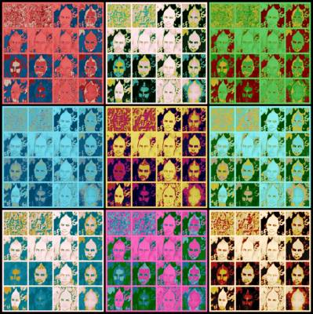

|
Personal Info |
|

To share personal info is not a problem for me. Through this mini-dossier, you will be able to know me more.
Me on Myself
I'm from Charlotte Amalie, in the U.S. Virgin Islands.
Horror head since post-toddlerhood. Writer, patron, and curator of things horror. Working with horror. I'm a horror-head since around my 5th year of age. I write about things that belong to the horror genre. I lived strange experiences, especially when writing or reading frightening non-fiction books.
I like most of the things done in the horror genre, but I'm working in just several niches of it. There's way too much to know in the genre, but that's not a reason to give up.
Like I said in the first paragraph, I'm obsessed with horror. This somewhat got in the way of having a well-rounded knowledge of other genres. I dealt with this situation by seeking and getting to know genres that are related to horror in some way. For instance the horror/film noir connection.
I love to make my experience in the horror genre useful to others, and I work actively to help others, to do this I answer horror questions on the internet when I have time to spare.
Hygiene
I take a shower at least once a day; always right after I wake up. Sometimes I take another in the evening.
In the summer, especially during the dog days I take three or four showers daily.
Education
I am a high school graduate.
After graduating from high school I went for half a year to a community college and did a course to become a residential electrician. My attendance of that course was acceptable, meaning that in general I didn't skip classes.
The complete course lasted six months. In the last fornight the professor made us make a rehearsal exam before the final one. I didn't pass the rehearsal exam. I continued going the last two weeks after that fake exam, but in the last day, the day to do the real exam to get the certificate, I didn't go; so I can't say I am a residential electrician, even if I have the theaoretical (and some of the practical) skills of one.
Other than that, I am very self-made in the educational aspect. I never stop learning things that are useful for all walks of life.
Political Ideology
I don't have any. This is very personal info, but I will tell you this: I rather have a psycho-spiritual outlook on life, instead of a political one.
Now, to be spiritual is very political, but I just don't want to go into such dense elucubrations here. The only thing I would say about being psycho-spiritual instead of socio-political in the ideology department is that it is about universal politics (involving more than just this planet), instead of local, regional, national or international politics.
I know it is in very bad taste to talk about taboo topics on the web, like religion, race, politics, and gender. I'm not interested in politics and I don't follow nor believe or not believe in any party or political ideology.
I never get upset by whoever wins or loses the elections, because I think that if they won it's because the governed needed that particular party to be in power to work out their karma as a country, so I see it as something predestined and of no great account in the grander scheme of things.
The only thing I want you to know about my non-political outlook is this: I love free enterprise and competition, and I work hard to be independent of both the state and anything that has to do with taxpayers' money.
I don't see public things as inherently good or bad, but on a personal level, I don't like to be given anything for free by the state or enjoy any public benefit that was financed by taxpayers' money.
I see both those who build themselves up or develop a lifestyle, with free public benefits and those that feel butt-hurt about that fact as idiots.
You may come from a downtrodden background, be brilliant, and need a starting boost that only public benefits can give you, but beyond a college education, or help in getting a first job I see everything else as making a career out of welfare, and I see that as being the lowest of the low, the most contemptible kind of bum.
Personal Info on Vices
I smoked at least fifteen cigarettes each day and drank alcohol every weekend. But I stopped drinking in December 2014 and in May 2017 I stopped smoking.
By 2017 I was trying to stop smoking cigarettes for five years already with the help of electronic cigarettes. The breakthrough came in 2017 when I started vaping sub-ohm with a box mod.
Personal Info on Deferred Gratification
I used to play a lot of video games, but I realized I was addicted and curtailed them to the weekends and certain specific days. I'd say that from playing video games every day to just weekends and when the stars aren't right to do anything else (which is at least another six days a month) has changed my life for the better.
My only indulgence during weekdays is watching some audiovisual media at night, after dinner, and then reading something in bed before falling asleep. On weekends, if I feel like it, I may occupy myself with some interactive entertainment, but lately, I prefer producing things (art and such) as a hobby instead of unproductive pastimes like video gaming.
Personal Info on Personal Qualities
These are some of the things that astrology says about me, I take them with a pinch of salt.
Some of my positive qualities
- Diplomatic
- Dreamer
- Tactful
- Self-righteous
- Executive Ability
- Temperate
- Social Catalyst
Some of my negative qualities
- Procrastinating
- Indecisive
- Passive
- Negative
- Unjust
- Miserly
- Heartless
Personal Info on Tastes
For a detailed list of my tastes, please read the page about my leisure.
Musical Tastes
I like classic punk rock, also known as punk 77. I like the post-punk and gothic rock (aka goth punk) genres. A genre that not many people know that I love is death punk, also known as deathrock.
I don't like how punk music involved past, say, the mid-1980s. I don't enjoy and don't listen to any hc-punk. I prefer listening to proto-punk acts like Television, The Stooges, and the like instead of contemporary hardcore punk.
I would rather listen to psychobilly bands like The Cramps, instead of hardcore punk. I think that hardcore is just too archaic and minimalistic, lacking almost completely in the melodic sense.
I like a lot of old punk rock bands, but if I had to choose one I will say Misfits. I think it's a pity that there aren't more horror punk bands because it's my favorite sub-genre of punk.
Of the newer genres, I like some industrial bands. My favorite industrial band is the duo that actually invented the industrial genre: Suicide. Lately, I'm listening more and more to an act of the hardstep genre known as The Horrorist.
Social Tastes
I like the performing arts, but it isn't easy to pair my low-brow tastes in everything else with theater, plastic art, and similar things dominated by mainstream culture. My most cherished kind of social event other than music concerts is theater, but as I said, it's not easy to find good stuff due to my niche genre tastes.
I detest idle talking and don't find getting together with other people enjoyable, unless it's a meeting to celebrate either punk culture or horror in some way. Socializing with others virtually has a very different kind of vibe for me, and I am more able to be playful in this way, but when actual face-to-face interaction is involved I am a very boring guy.
Personal Info on Lifestyle
Fitness
I do from thirty minutes to one hour of exercise a day and always split it into two sessions of half an hour each.
Diet
I am an ovo-lacto vegan.
I don't take much dairy in general and almost no eggs. I drink one cup of hot milk in-between days. Sometimes I eat regular ice cream. Sometimes I eat ricotta cheese. Sometimes I make cheese bread with hard cheese, but this last diary product I will sooner take out of my diet because it is not ethically sound, as I see it (hard cheese has rennet, which is a very bad thing).
Eggs, I eat only one egg per week, the day of the week I eat pancakes for breakfast.
I eat at least four times a day. Since I exercise a lot I know I should eat five or six times a day. Five meals a day, I can manage, but six becomes very hard for me to achieve. My meals are mostly fresh natural vegetables since I detest processed food.
Sleep
I sleep at least eight hours daily but I always aim at sleeping nine. When I have to deliver something before a deadline I sometimes get only six hours of sleep, very much to my chagrin. I can function on just five hours of sleep, but I try never to have to go that way.
© 2022 Bholenath Valsan — Personal Info
[
Work
]
|
[
Leisure
] |
Media Credits
Thanks to all these persons, who kindly shared sourced media with permissive CC licenses.
IQRemix:
Rutherford Manor Haunt - Edmonton / Hans
Splinter: tinsmith at the midwinter fair / Stephen
Day: Haunted House / Boris
Kasimov: _BRK5851 (1) / waferboard:
red mask / JBLM
MWR: IMG_9246 / MockLogic:
Haunted TV / anna-maria v: haunted hause 2 / K
Tao: Souls of the Forsaken / Steve Snodgrass: Haunted House Ride
/ leKorbo.be: Kelgelbahn / Mel
Possehl: weathervane-191076_1280 / Lee
Russell: Abandoned Nursing Home
| About |
| Legal |
| Manifesto |
| Contact |
  
 |
|
© Bholenath Valsan 2022
Scroll to Top
|